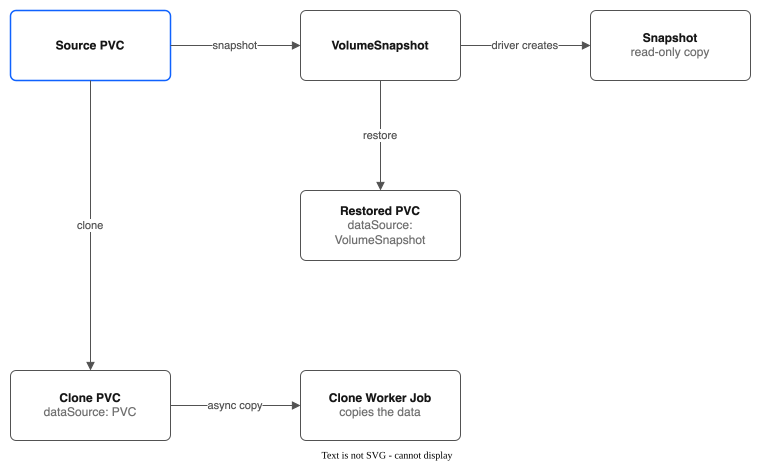

Part 2: Snapshots and Clones¶
Tutorial Series: Index | Part 1: Pool Creation | Part 2 | Part 3: Group Snapshots & Hooks | Part 4: Pool Configuration | Part 5: Golden Images | Part 6: Replication & Failover | Part 7: Monitoring | Part 8: Migration & Console | Part 9: COS Bucket for Backups
Step-by-step guide to create point-in-time snapshots, restore data from them, and clone volumes. Every clone is asynchronous: a Job copies the data in the background.
Cluster: ROKS eu-de (OpenShift Virtualization enabled) Zone: eu-de-1
Prerequisites¶
Verify the CSI driver is running:
# Controller pod (6/6 Running)
oc get pods -n kube-system -l app.kubernetes.io/name=ibm-vpc-file-pool-csi,app.kubernetes.io/component=controller
# Node pods (2/2 Running on each schedulable node)
oc get pods -n kube-system -l app.kubernetes.io/name=ibm-vpc-file-pool-csi,app.kubernetes.io/component=node
# CSI Driver registered
oc get csidriver vpc-file-pool.csi.ibm.io
Verify the VolumeSnapshotClass exists (auto-created by the Helm chart):
Expected output:
If missing, the CSI driver Helm chart may not have been installed with volumeSnapshotClass.create: true. See INSTALL.md for details.
Step 1: Clean Up Any Previous Test Resources¶
Resources must be deleted in the right order -- VolumeSnapshots hold references to PVCs, PVCs cascade to SubVolume deletes, and pools have finalizers that block deletion while SubVolumes exist.
POOL_NAME=snap-pool
TUTORIAL_NS=pool-tutorial-snapshots
# 1. Delete pods first
oc delete pods --all -n ${TUTORIAL_NS} --force --grace-period=0 --ignore-not-found
# 2. Delete VolumeSnapshots
oc delete volumesnapshot --all -n ${TUTORIAL_NS} --timeout=60s --ignore-not-found
# 3. Delete PVCs
oc delete pvc --all -n ${TUTORIAL_NS} --timeout=60s --ignore-not-found
# 4. Grace period for CSI to cascade SubVolume deletes
sleep 5
# 5. Force-clean orphan SubVolumes (if CSI cascade didn't finish)
for sv in $(oc get subvolumes.storage.ibmcloud.io \
-l storage.ibmcloud.io/pool=${POOL_NAME} -o name 2>/dev/null); do
oc patch "$sv" --type=merge -p '{"metadata":{"finalizers":null}}'
done
oc delete subvolumes.storage.ibmcloud.io \
-l storage.ibmcloud.io/pool=${POOL_NAME} --ignore-not-found
# 6. Force-clean orphan Snapshots
for snap in $(oc get snapshots.storage.ibmcloud.io \
-l storage.ibmcloud.io/pool=${POOL_NAME} -o name 2>/dev/null); do
oc patch "$snap" --type=merge -p '{"metadata":{"finalizers":null}}'
done
oc delete snapshots.storage.ibmcloud.io \
-l storage.ibmcloud.io/pool=${POOL_NAME} --ignore-not-found
# 7. Delete pool (force-remove finalizer if stuck)
oc delete filesharepool ${POOL_NAME} --timeout=60s --ignore-not-found || {
oc patch filesharepools.storage.ibmcloud.io ${POOL_NAME} \
--type=merge -p '{"metadata":{"finalizers":null}}'
oc delete filesharepool ${POOL_NAME} --ignore-not-found
}
# 8. Delete namespace
oc delete namespace ${TUTORIAL_NS} --timeout=60s --ignore-not-found
Step 2: Set Up Variables, Namespace, and Pool¶
export POOL_NAME=snap-pool
export TUTORIAL_NS=pool-tutorial-snapshots
oc create namespace ${TUTORIAL_NS}
Create a FileSharePool for this tutorial. No KubeVirt UID settings are needed -- this tutorial uses plain pods, not VMs.
cat <<EOF | oc apply -f -
apiVersion: storage.ibmcloud.io/v1alpha1
kind: FileSharePool
metadata:
name: ${POOL_NAME}
spec:
zone: eu-de-1
profile: dp2
shareSizeGB: 100
iops: 100
maxShares: 2
initialShares: 1
autoExpand: true
expandThresholdPercent: 80
allocationStrategy: spread
defaultPermissions: "0755"
EOF
What this does:
- Creates a pool named snap-pool in eu-de-1
- Uses the dp2 profile with 100 IOPS
- Each share is 100 GB; up to 2 shares allowed
- 1 share is created immediately
- Default permissions 0755 (no KubeVirt UID override needed for this tutorial)
Watch the pool initialize (takes 30-90 seconds for VPC share creation):
Wait until PHASE shows Ready:
Verify the auto-created StorageClass:
Step 3: Create a PVC and Populate It with Test Data¶
Create a PVC and a writer pod that writes multiple files:
cat <<EOF | oc apply -f -
apiVersion: v1
kind: PersistentVolumeClaim
metadata:
name: test-data
namespace: ${TUTORIAL_NS}
spec:
accessModes:
- ReadWriteMany
storageClassName: ${POOL_NAME}
resources:
requests:
storage: 10Gi
---
apiVersion: v1
kind: Pod
metadata:
name: data-writer
namespace: ${TUTORIAL_NS}
spec:
restartPolicy: Never
containers:
- name: writer
image: busybox
command:
- sh
- -c
- |
echo "Application config v1.0" > /data/config.txt
echo "Important database records" > /data/db-dump.txt
echo "User uploads archive" > /data/uploads.txt
dd if=/dev/urandom of=/data/binary-blob.bin bs=1M count=5
echo "Total files written:"
ls -la /data/
echo "Checksums:"
md5sum /data/*.txt /data/*.bin
echo "Done!"
volumeMounts:
- name: data
mountPath: /data
volumes:
- name: data
persistentVolumeClaim:
claimName: test-data
EOF
What this does:
- Creates a 10 Gi PVC on the snap-pool
- Writes 3 text files and a 5 MB binary blob to /data
- Prints checksums so you can verify data integrity after restore
Wait for the writer pod to complete:
oc get pod data-writer -n ${TUTORIAL_NS} -w
# Wait for STATUS=Completed
oc logs data-writer -n ${TUTORIAL_NS}
Expected output (checksums will differ):
Total files written:
-rw-r--r-- 1 99 99 25 ... config.txt
-rw-r--r-- 1 99 99 27 ... db-dump.txt
-rw-r--r-- 1 99 99 22 ... uploads.txt
-rw-r--r-- 1 99 99 5242880 ... binary-blob.bin
Checksums:
a1b2c3d4... /data/config.txt
e5f6a7b8... /data/db-dump.txt
c9d0e1f2... /data/uploads.txt
1234abcd... /data/binary-blob.bin
Done!
Save the checksums -- you will compare them after restoring from the snapshot.
Verify the PVC and SubVolume:
oc get pvc test-data -n ${TUTORIAL_NS}
# Should show STATUS=Bound
oc get subvolumes -o wide
# Should show 1 SubVolume for test-data
Clean up the writer pod:
Step 4: Create a Snapshot¶
Use the Kubernetes CSI VolumeSnapshot API to create a point-in-time snapshot. The CSI driver handles creating the underlying Snapshot CR automatically.
cat <<EOF | oc apply -f -
apiVersion: snapshot.storage.k8s.io/v1
kind: VolumeSnapshot
metadata:
name: test-data-snap
namespace: ${TUTORIAL_NS}
spec:
volumeSnapshotClassName: ibm-vpc-file-pool
source:
persistentVolumeClaimName: test-data
EOF
What this does:
- Creates a VolumeSnapshot named test-data-snap targeting the test-data PVC
- The ibm-vpc-file-pool VolumeSnapshotClass tells the CSI external-snapshotter sidecar to call the pool driver's CreateSnapshot RPC
- A Kubernetes Job in the driver's namespace copies the SubVolume's directory into a snapshot path (e.g., /pvcs/.snapshots/snap-xxx) on the same VPC file share. The copy is not instant
- The driver creates a Snapshot CR (kind: Snapshot, apiVersion: storage.ibmcloud.io/v1alpha1) that tracks the snapshot on disk
Consistency: A snapshot of a volume that a pod is writing to is not one point in time, because files can change while the copy runs. Here no pod uses the volume, so the copy is consistent. For a disk of a running VM, the snapshot is a QEMU copy (or an instant snapshot where the KubeVirt
Sidecarfeature gate is on). See KNOWN-LIMITATIONS.md and VM-INSTANT-SNAPSHOTS.md.
Watch the VolumeSnapshot become ready:
Wait until READYTOUSE shows true:
NAME READYTOUSE SOURCEPVC SOURCESNAPSHOTCONTENT RESTORESIZE SNAPSHOTCLASS SNAPSHOTCONTENT CREATIONTIME AGE
test-data-snap true test-data 10Gi ibm-vpc-file-pool snapcontent-xxxxxxxx-xxxx-xxxx-xxxx-xxxxxxxxxxxx ... ...
Now inspect the underlying Snapshot CR that the CSI driver created:
Expected output:
What the Snapshot CR contains:
- spec.poolName -- references the snap-pool
- spec.sourceSubVolume -- the SubVolume name (not the PVC name)
- spec.snapshotPath -- the directory where snapshot data lives (e.g., /pvcs/.snapshots/snap-xxx)
- spec.sourceSubPath -- the original SubVolume path (e.g., /pvcs/pvc-xxx)
- status.phase: Ready -- snapshot copy is complete
- status.readyToUse: true -- safe to restore from
Verify the pool capacity -- the snapshot consumes allocated space:
Step 5: Restore from Snapshot¶
Create a new PVC that restores data from the snapshot. Use the dataSource field to reference the VolumeSnapshot:
cat <<EOF | oc apply -f -
apiVersion: v1
kind: PersistentVolumeClaim
metadata:
name: restored-data
namespace: ${TUTORIAL_NS}
spec:
accessModes:
- ReadWriteMany
storageClassName: ${POOL_NAME}
resources:
requests:
storage: 10Gi
dataSource:
name: test-data-snap
kind: VolumeSnapshot
apiGroup: snapshot.storage.k8s.io
EOF
What this does:
- Creates a new 10 Gi PVC named restored-data
- The dataSource tells the CSI driver to populate the new SubVolume by copying data from the snapshot
- The restored PVC is independent of the original -- changes to one do not affect the other
Wait for the PVC to bind:
oc get pvc restored-data -n ${TUTORIAL_NS} -w
# The PVC binds at once. The restore copy runs behind it, and a pod cannot mount it until the copy has finished
Mount the restored PVC in a reader pod and verify the data:
cat <<EOF | oc apply -f -
apiVersion: v1
kind: Pod
metadata:
name: restore-reader
namespace: ${TUTORIAL_NS}
spec:
restartPolicy: Never
containers:
- name: reader
image: busybox
command:
- sh
- -c
- |
echo "=== Restored files ==="
ls -la /data/
echo ""
echo "=== File contents ==="
cat /data/config.txt
cat /data/db-dump.txt
cat /data/uploads.txt
echo ""
echo "=== Checksums ==="
md5sum /data/*.txt /data/*.bin
echo "Done!"
volumeMounts:
- name: data
mountPath: /data
volumes:
- name: data
persistentVolumeClaim:
claimName: restored-data
EOF
oc get pod restore-reader -n ${TUTORIAL_NS} -w
# Wait for STATUS=Completed
oc logs restore-reader -n ${TUTORIAL_NS}
Verify: The checksums should match exactly what the writer pod produced in Step 3. All 4 files should be present with identical content.
Now prove the restored PVC is independent -- modify data on the restored copy and confirm the original is unchanged:
cat <<EOF | oc apply -f -
apiVersion: v1
kind: Pod
metadata:
name: restore-modifier
namespace: ${TUTORIAL_NS}
spec:
restartPolicy: Never
containers:
- name: modifier
image: busybox
command:
- sh
- -c
- |
echo "Application config v2.0 -- MODIFIED" > /data/config.txt
rm /data/uploads.txt
echo "New file on restored copy" > /data/new-file.txt
echo "=== Modified restored files ==="
ls -la /data/
cat /data/config.txt
echo "Done!"
volumeMounts:
- name: data
mountPath: /data
volumes:
- name: data
persistentVolumeClaim:
claimName: restored-data
EOF
oc get pod restore-modifier -n ${TUTORIAL_NS} -w
# Wait for STATUS=Completed
oc logs restore-modifier -n ${TUTORIAL_NS}
Now verify the original PVC is untouched:
cat <<EOF | oc apply -f -
apiVersion: v1
kind: Pod
metadata:
name: original-reader
namespace: ${TUTORIAL_NS}
spec:
restartPolicy: Never
containers:
- name: reader
image: busybox
command:
- sh
- -c
- |
echo "=== Original files (should be unchanged) ==="
ls -la /data/
cat /data/config.txt
echo "Done!"
volumeMounts:
- name: data
mountPath: /data
volumes:
- name: data
persistentVolumeClaim:
claimName: test-data
EOF
oc get pod original-reader -n ${TUTORIAL_NS} -w
# Wait for STATUS=Completed
oc logs original-reader -n ${TUTORIAL_NS}
Expected: The original config.txt still says "Application config v1.0", uploads.txt still exists, and new-file.txt does not exist. The snapshot restore created a fully independent copy.
Clean up verification pods:
oc delete pod restore-reader restore-modifier original-reader -n ${TUTORIAL_NS} --force --grace-period=0
Step 6: Clone a Small Volume¶
Cloning creates a copy of an existing PVC's data on a new PVC. The driver performs every clone asynchronously, however small the volume. CreateVolume records the clone and returns, and the clone worker runs a Kubernetes Job that copies the data. A pod that uses the clone waits until the copy is complete.
Create a source PVC with test data:
cat <<EOF | oc apply -f -
apiVersion: v1
kind: PersistentVolumeClaim
metadata:
name: clone-source
namespace: ${TUTORIAL_NS}
spec:
accessModes:
- ReadWriteMany
storageClassName: ${POOL_NAME}
resources:
requests:
storage: 5Gi
---
apiVersion: v1
kind: Pod
metadata:
name: clone-source-writer
namespace: ${TUTORIAL_NS}
spec:
restartPolicy: Never
containers:
- name: writer
image: busybox
command:
- sh
- -c
- |
echo "Clone source data - this should appear in the clone" > /data/clone-test.txt
echo "More source data" > /data/records.txt
md5sum /data/*.txt
echo "Done!"
volumeMounts:
- name: data
mountPath: /data
volumes:
- name: data
persistentVolumeClaim:
claimName: clone-source
EOF
oc get pod clone-source-writer -n ${TUTORIAL_NS} -w
# Wait for STATUS=Completed
oc logs clone-source-writer -n ${TUTORIAL_NS}
Save the checksums. Now create a clone by referencing the source PVC in dataSource:
cat <<EOF | oc apply -f -
apiVersion: v1
kind: PersistentVolumeClaim
metadata:
name: clone-target
namespace: ${TUTORIAL_NS}
spec:
accessModes:
- ReadWriteMany
storageClassName: ${POOL_NAME}
resources:
requests:
storage: 5Gi
dataSource:
name: clone-source
kind: PersistentVolumeClaim
EOF
What this does:
- The dataSource references a PVC (kind: PersistentVolumeClaim) with no apiGroup -- this tells the CSI driver to clone, not restore from snapshot
- The driver creates the SubVolume with cloneStatus: Pending and the clone worker copies the data with a Job
- The clone PVC binds immediately, but a pod that mounts it waits until the copy is complete
Note: Earlier versions had a synchronous path for small volumes, set by the StorageClass parameter
cloneSyncThresholdGB. It was removed. If a StorageClass still sets it, it is ignored.
Wait for the clone PVC to bind:
Verify the cloned data:
cat <<EOF | oc apply -f -
apiVersion: v1
kind: Pod
metadata:
name: clone-reader
namespace: ${TUTORIAL_NS}
spec:
restartPolicy: Never
containers:
- name: reader
image: busybox
command:
- sh
- -c
- |
echo "=== Cloned files ==="
ls -la /data/
cat /data/clone-test.txt
cat /data/records.txt
echo ""
echo "=== Checksums (should match source) ==="
md5sum /data/*.txt
echo "Done!"
volumeMounts:
- name: data
mountPath: /data
volumes:
- name: data
persistentVolumeClaim:
claimName: clone-target
EOF
oc get pod clone-reader -n ${TUTORIAL_NS} -w
# Wait for STATUS=Completed
oc logs clone-reader -n ${TUTORIAL_NS}
Verify: Checksums match the source. The clone is a complete, independent copy.
Check the SubVolume to confirm the clone relationship:
The clone's SubVolume will have spec.sourceVolume set to the source SubVolume name. While the copy runs, the status.phase is Cloning. It becomes Bound when the copy is complete.
# Get the SubVolume name for clone-target
SV_NAME=$(oc get subvolumes -o json | jq -r '.items[] | select(.spec.pvcName=="clone-target") | .metadata.name')
# Inspect the clone relationship
oc get subvolume ${SV_NAME} -o jsonpath='{.spec.sourceVolume}'
echo ""
oc get subvolume ${SV_NAME} -o jsonpath='{.status.phase}'
echo ""
Expected: sourceVolume shows the source SubVolume name. phase shows Bound once the clone is complete (the reader pod above starts only after that).
Clean up verification pods:
Step 7: Clone a Larger Volume and Watch Progress¶
Larger clones work the same way, but the copy takes longer, so it is easier to watch. The SubVolume is created immediately, but data is copied in the background by the Clone Worker. The CSI NodePublishVolume call blocks (returns codes.Unavailable) until the clone completes, so kubelet retries automatically -- the pod starts only when data is fully copied.
Create a large source PVC with test data:
cat <<EOF | oc apply -f -
apiVersion: v1
kind: PersistentVolumeClaim
metadata:
name: large-source
namespace: ${TUTORIAL_NS}
spec:
accessModes:
- ReadWriteMany
storageClassName: ${POOL_NAME}
resources:
requests:
storage: 15Gi
---
apiVersion: v1
kind: Pod
metadata:
name: large-writer
namespace: ${TUTORIAL_NS}
spec:
restartPolicy: Never
containers:
- name: writer
image: busybox
command:
- sh
- -c
- |
echo "Large volume source data" > /data/large-test.txt
dd if=/dev/urandom of=/data/large-blob.bin bs=1M count=50
md5sum /data/large-test.txt /data/large-blob.bin
echo "Done!"
volumeMounts:
- name: data
mountPath: /data
volumes:
- name: data
persistentVolumeClaim:
claimName: large-source
EOF
oc get pod large-writer -n ${TUTORIAL_NS} -w
# Wait for STATUS=Completed
oc logs large-writer -n ${TUTORIAL_NS}
Save the checksums. Now create the clone:
cat <<EOF | oc apply -f -
apiVersion: v1
kind: PersistentVolumeClaim
metadata:
name: large-clone
namespace: ${TUTORIAL_NS}
spec:
accessModes:
- ReadWriteMany
storageClassName: ${POOL_NAME}
resources:
requests:
storage: 15Gi
dataSource:
name: large-source
kind: PersistentVolumeClaim
EOF
What this does:
- The driver creates the SubVolume and marks it for cloning
- The Clone Worker (background goroutine in the controller) picks up the pending clone and runs a Job that copies the data
- The SubVolume transitions through: Cloning phase with cloneStatus: Pending -> cloneStatus: InProgress -> cloneStatus: Complete -> phase Bound
The PVC binds immediately, but watch the SubVolume's clone progress:
oc get pvc large-clone -n ${TUTORIAL_NS}
# STATUS=Bound (PVC binds immediately, even though data copy is still in progress)
Watch the clone status progression on the SubVolume:
# Get the SubVolume name for the clone
SV_CLONE=$(oc get subvolumes -o json | jq -r '.items[] | select(.spec.pvcName=="large-clone") | .metadata.name')
# Watch the clone status
oc get subvolume ${SV_CLONE} -o jsonpath='{.status.phase}' ; echo ""
oc get subvolume ${SV_CLONE} -o jsonpath='{.status.cloneStatus}' ; echo ""
While the clone is in progress, check the cloneProgress field for byte-level tracking:
Expected output during copy:
{
"bytesCopied": 26214400,
"totalBytes": 52428800,
"startedAt": "2026-02-25T10:30:00Z",
"completedAt": null,
"error": ""
}
And after completion:
{
"bytesCopied": 52428800,
"totalBytes": 52428800,
"startedAt": "2026-02-25T10:30:00Z",
"completedAt": "2026-02-25T10:30:45Z",
"error": ""
}
Wait for the clone to finish:
# Poll until cloneStatus=Complete (or watch the SubVolume)
while true; do
STATUS=$(oc get subvolume ${SV_CLONE} -o jsonpath='{.status.cloneStatus}')
echo "Clone status: ${STATUS}"
if [ "${STATUS}" = "Complete" ]; then break; fi
sleep 5
done
Now deploy a pod that reads the cloned data. If you deploy this pod before the clone completes, kubelet will retry mounting -- NodePublishVolume returns codes.Unavailable until cloneStatus is Complete:
cat <<EOF | oc apply -f -
apiVersion: v1
kind: Pod
metadata:
name: large-clone-reader
namespace: ${TUTORIAL_NS}
spec:
restartPolicy: Never
containers:
- name: reader
image: busybox
command:
- sh
- -c
- |
echo "=== Cloned files ==="
ls -la /data/
cat /data/large-test.txt
echo ""
echo "=== Checksums (should match source) ==="
md5sum /data/large-test.txt /data/large-blob.bin
echo "Done!"
volumeMounts:
- name: data
mountPath: /data
volumes:
- name: data
persistentVolumeClaim:
claimName: large-clone
EOF
oc get pod large-clone-reader -n ${TUTORIAL_NS} -w
# Wait for STATUS=Completed
oc logs large-clone-reader -n ${TUTORIAL_NS}
Verify: Checksums match the source. The clone is a complete, independent copy.
How the clone gate works: When a pod tries to mount a PVC that is still cloning, the node agent's
NodePublishVolumereads the SubVolume CR and checksstatus.cloneStatus. If the status is notComplete, it returns a gRPCcodes.Unavailableerror. Kubelet interprets this as a transient failure and retries with exponential backoff. Once the Clone Worker finishes and setscloneStatus: Complete, the next retry succeeds and the pod starts. This ensures pods never see partially-copied data.
Clean up verification pods:
Step 8: Verify Final Pool State¶
Review the pool to see all allocations:
Expected (approximate):
The 70 GB allocated breaks down as:
- test-data (10 Gi) + snapshot (10 Gi) + restored-data (10 Gi)
- clone-source (5 Gi) + clone-target (5 Gi)
- large-source (15 Gi) + large-clone (15 Gi)
List all SubVolumes:
List all Snapshot CRs:
Cleanup¶
Resources must be deleted in dependency order. Deleting the namespace alone can leave orphan SubVolumes and Snapshots, causing the pool to get stuck.
Full Cleanup¶
# 1. Delete all pods
oc delete pods --all -n ${TUTORIAL_NS} --force --grace-period=0
# 2. Delete VolumeSnapshots (releases Snapshot CRs)
oc delete volumesnapshot --all -n ${TUTORIAL_NS} --timeout=60s
# 3. Delete PVCs (CSI cascades SubVolume deletes)
oc delete pvc --all -n ${TUTORIAL_NS} --timeout=60s
# 4. Grace period for CSI to cascade SubVolume and Snapshot deletes
sleep 5
# 5. Force-clean orphan Snapshots
for snap in $(oc get snapshots.storage.ibmcloud.io \
-l storage.ibmcloud.io/pool=${POOL_NAME} -o name 2>/dev/null); do
oc patch "$snap" --type=merge -p '{"metadata":{"finalizers":null}}'
done
oc delete snapshots.storage.ibmcloud.io \
-l storage.ibmcloud.io/pool=${POOL_NAME} --ignore-not-found
# 6. Force-clean orphan SubVolumes
for sv in $(oc get subvolumes.storage.ibmcloud.io \
-l storage.ibmcloud.io/pool=${POOL_NAME} -o name 2>/dev/null); do
oc patch "$sv" --type=merge -p '{"metadata":{"finalizers":null}}'
done
oc delete subvolumes.storage.ibmcloud.io \
-l storage.ibmcloud.io/pool=${POOL_NAME} --ignore-not-found
# 7. Delete pool-owned PVs
oc get pv -o json | jq -r "
.items[]
| select(.spec.csi.driver == \"vpc-file-pool.csi.ibm.io\")
| select(.spec.csi.volumeAttributes.pool == \"${POOL_NAME}\")
| .metadata.name" | xargs -r oc delete pv
# 8. Delete pool (force-remove finalizer if stuck)
oc delete filesharepool ${POOL_NAME} --timeout=60s || {
oc patch filesharepools.storage.ibmcloud.io ${POOL_NAME} \
--type=merge -p '{"metadata":{"finalizers":null}}'
oc delete filesharepool ${POOL_NAME}
}
# 9. Delete namespace
oc delete namespace ${TUTORIAL_NS} --timeout=60s
# 10. Verify VPC shares are being deleted
ibmcloud is shares
Quick Reference: Useful Commands¶
| What | Command |
|---|---|
| List VolumeSnapshots | oc get volumesnapshot -n <namespace> |
| VolumeSnapshot details | oc describe volumesnapshot <name> -n <namespace> |
| List Snapshot CRs | oc get snapshots.storage.ibmcloud.io -o wide |
| Snapshot CR details | oc describe snapshot.storage.ibmcloud.io <name> |
| List SubVolumes | oc get subvolumes -o wide |
| SubVolume clone status | oc get subvolume <name> -o jsonpath='{.status.cloneStatus}' |
| Clone progress | oc get subvolume <name> -o json \| jq '.status.cloneProgress' |
| VolumeSnapshotClass | oc get volumesnapshotclass ibm-vpc-file-pool |
| Pool capacity | oc get filesharepools |
| Controller logs | oc logs -n kube-system -l app.kubernetes.io/component=controller -c csi-controller --tail=50 |
| Node agent logs | oc logs -n kube-system -l app.kubernetes.io/component=node -c csi-node --tail=50 |
Key Concepts¶

Snapshots vs Clones¶
| Snapshot | Clone | |
|---|---|---|
| Source | PVC (via VolumeSnapshot API) | PVC (via dataSource on PVC) |
| Result | Read-only point-in-time copy (Snapshot CR) | New independent read-write PVC |
| API | VolumeSnapshot (snapshot.storage.k8s.io) | PVC with dataSource (core/v1) |
| Restore | Create PVC with dataSource -> VolumeSnapshot | N/A (clone is already a PVC) |
| Pool capacity | Snapshot consumes allocated space | Clone PVC consumes allocated space |
How Clones Work¶
Every clone is asynchronous, whatever the volume size. The SubVolume is created immediately, and the Clone Worker runs a Job that copies the data in the background. NodePublishVolume blocks until the copy is complete.
Earlier versions had a synchronous path for small volumes; it was removed. A cloneSyncThresholdGB StorageClass parameter is ignored if set.
What's Next¶
Now that you can create snapshots, restore from them, and clone volumes, explore the rest of the series. Group snapshots (Part 3) are not active, so Part 3 explains why and covers hooks:
- Part 3: Group Snapshots & Hooks -- Group snapshots are not active yet; this part explains why and covers hooks
- Part 4: Pool Configuration -- Multi-tier pools, allocation strategies, auto-expansion, and share draining
- Part 5: Golden Images -- Optional golden image provisioning for KubeVirt (hidden in the console)
- Part 6: Replication & Failover -- Cross-region DR with direct NFS and driver-to-driver modes
- Part 7: Monitoring -- Prometheus metrics, alerts, and Grafana dashboards
- Part 8: Migration & Console -- PVC migration tool and OpenShift console plugin
- Part 9: COS Bucket for Backups -- Locked COS bucket, a restricted key, and a CBR rule